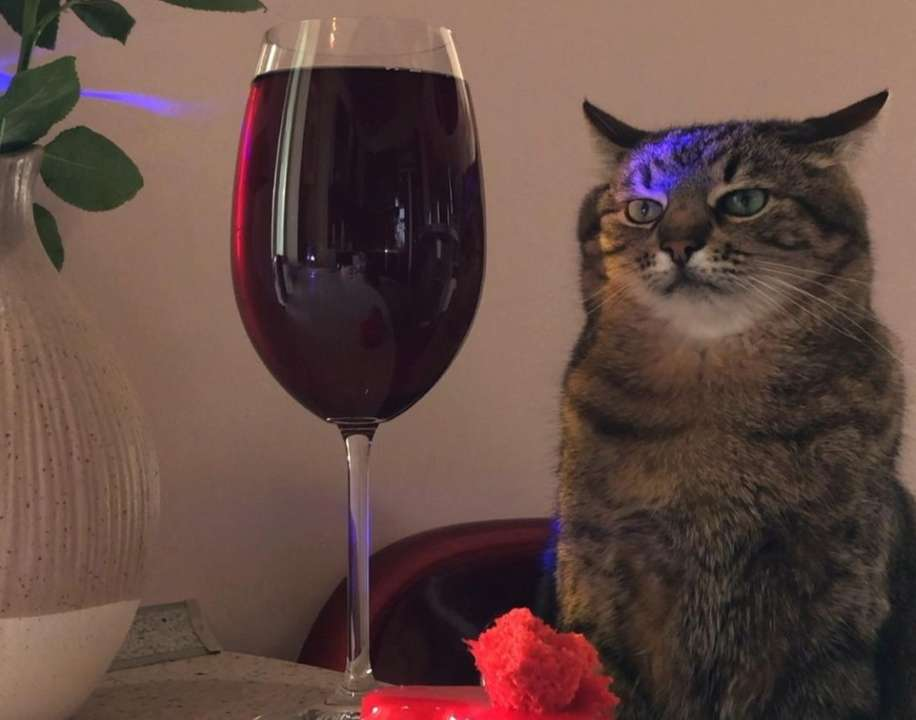
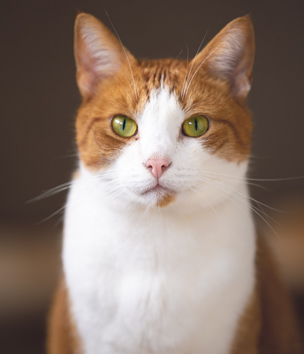
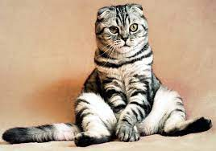
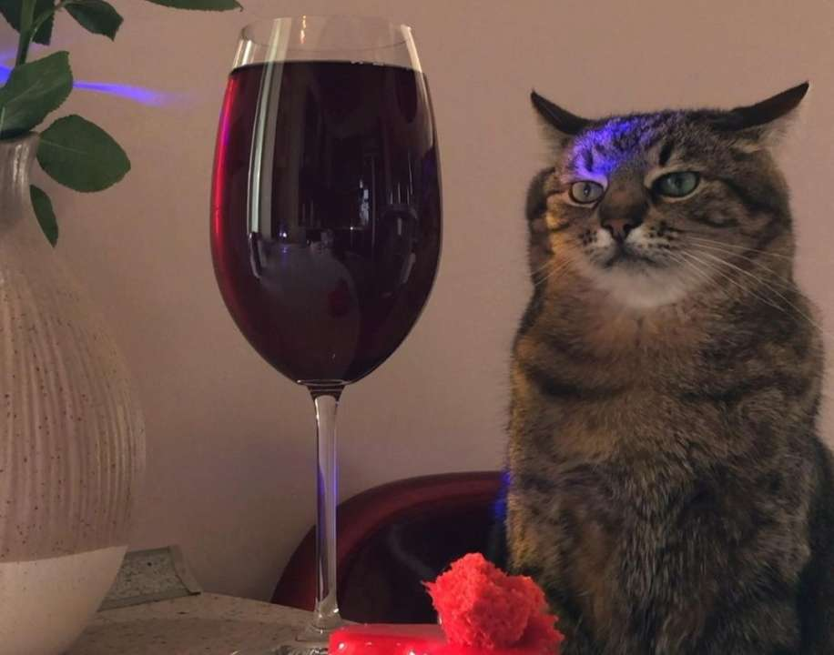
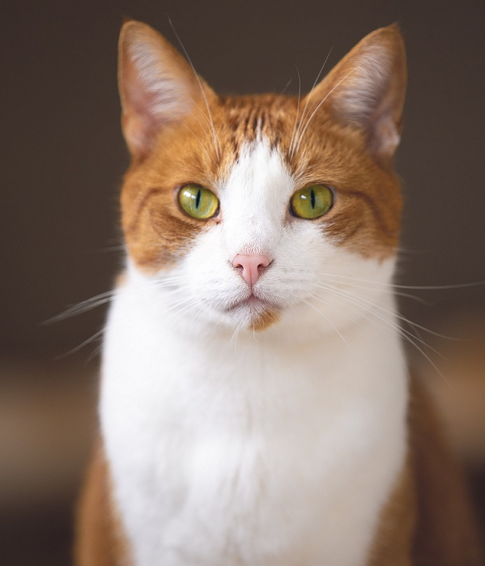
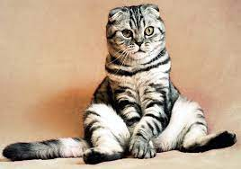

Story about cats
- You can only love a cat on its terms.
- The cat chooses its owner, and nothing else.
- Cats are a valuable resource. They create comfort.
- A man is as cultured as he is able to understand a cat.
- He who cannot understand his cat cannot understand anything at all.
- Women and cats do not go when they are called, and come when they are not called.
- If a cat likes you, she will allow you to become her friend, but never her master!
- When all people are like cats at two o'clock in the afternoon, the world will be perfect.
- From an aesthetic point of view, there are only two ideal things in the world: watches and cats.
- The more cats you have, the longer you live. If you have a hundred cats, you will live ten times longer than if you have ten. The day will come when they will make this discovery, and people will get a thousand cats and live forever.
A cat is a pet, one of the most popular "companion animals". From the point of view of scientific taxonomy, a domestic cat is a mammal of the cat family of the carnivora order.
The oldest cats in history
Not only people, but also feline representatives get into the Guinness Book of Records. One of the oldest cats in history is recognized as the Canadian Sphynx Granpa Rex Allen, who lived for 34 years in the UK. An even older cat was a pet named Lucy, who lived for 43 years, and also in the UK. She died in 2015. And a white and red Maine Coon from England named Rubble lived for 31 years. Burmese cat Lady Catalina also got into the Book of Records, having lived 35 years in Australia. No matter how long your furry pet lives, create the most pleasant and safe living conditions for him, full of care and love. The cat does not need so much from you, spend many years in joy.